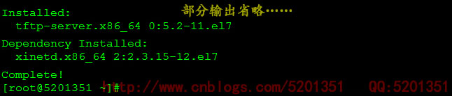

TFTP（Trivial File Transfer Protocol,简单文件传输协议）是TCP/IP协议族中的一个用来在客户机与服务器之间 进行简单文件传输的协议，提供不复杂、开销不大的文件传输服务。端口号为UDP的69号端口。 TFTP是一个传输文件的简单协议，它基于UDP协议而实现，但是我们也不能确定有些TFTP协议是基于其它传输协议完成的 此协议设计的时候是进行小文件传输的。因此它不具备通常的FTP的许多功能， 它只能从文件服务器上获得或写入文件，不能列出目录，不进行认证。它传输8位数据。 传输中有三种模式：netascii，这是8位的ASCII码形式,另一种是octet，这是8位源数据类型； 最后一种mail已经不再支持，它将返回的数据直接返回给用户而不是保存为文件。 ====================================================== 笔者以在Centos 7上安装tftp-server为例，将安装与配置tftp-server服务的过程记录如下： 1、安装tftp还是比较简单的，只需要使用yum命令安装即可，如下： [root@5201351 ~]# yum install tftp-server -y //安装tftp-server只是会依赖于xinetd  如图所示：安装tftp-server需要依赖于xinetd，如果需要安装tftp客户端还需要单独安装 2、tftp服务依赖于网络守护进程服务程序xinetd，默认情况下TFTP服务是禁用的，所以要修改tftp配置文件来开启服务 将disable的值更改为no即可，其中tftp的默认根目录为/var/lib/tftpboot，如下： [root@5201351 ~]# vim /etc/xinetd.d/tftp service tftp { socket_type = dgram protocol = udp wait = yes user = root server = /usr/sbin/in.tftpd server_args = -s /var/lib/tftpboot disable = no #默认为yes,这里我们将其更改为no per_source = 11 cps = 100 2 flags = IPv4 } 3、启动tftp-server服务，这里要注意的是启动tftp.service之前必须得先启动tftp.socket [root@5201351 ~]# systemctl start tftp.socket [root@5201351 ~]# systemctl start tftp.service 4、使用tftp，笔者这里以windows 7为例，windown 7默认没有启用tftp客户端功能，我们可以在【程序--打开或关闭windows功能】里启用tftp TFTP [-i] host [GET | PUT] source [destination] //tftp命令的使用帮助 ================================================ tftp 10.101.230.168 get 5201351.txt //下载根tftp根下的文件到当前目录 tftp 10.101.230.168 get aa/5201351.txt c:\5201352.txt //下载tftp服务器上指定的文件到本地指定的目录 【补充内容-之tftp文件的上传】>>>>>>>>>>>>>>>> ========================================================= 1、给需要上传的目录加上写权限，主要是给其他用户加上写权限 2、将tftp配置文件中的server_args选项值、末尾加上-c参数 3、重启xinetd.service、tftp.service服务 tftp 10.101.230.168 put 5201351.txt //没指定目标目录，也即为默认的tftp根目录 |